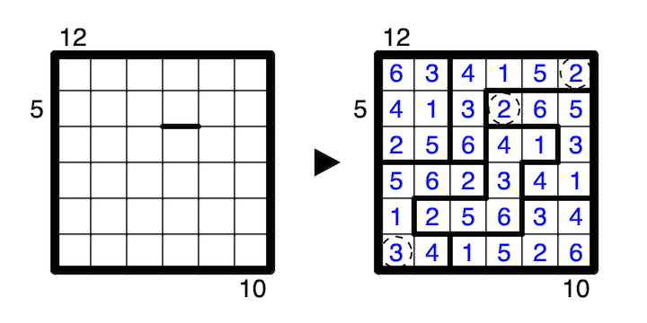

A number outside the grid indicates that the first Y numbers looking into the grid sum to that number, where Y is the Xth number from the direction of the clue, and X is the first number from the direction of the clue. A question mark may be any positive number.
Those first Y numbers comprising the sum of the outside clue are all part of the same region, and (if Y is less than 9), the Y+1th cell is in a different region.
Furthermore, of the (up to) 9 cells surrounding and including the cell containing Y, exactly Y belong to the region containing the cell containing Y.
One number is already given.
A 6x6 example with a given border is provided:
